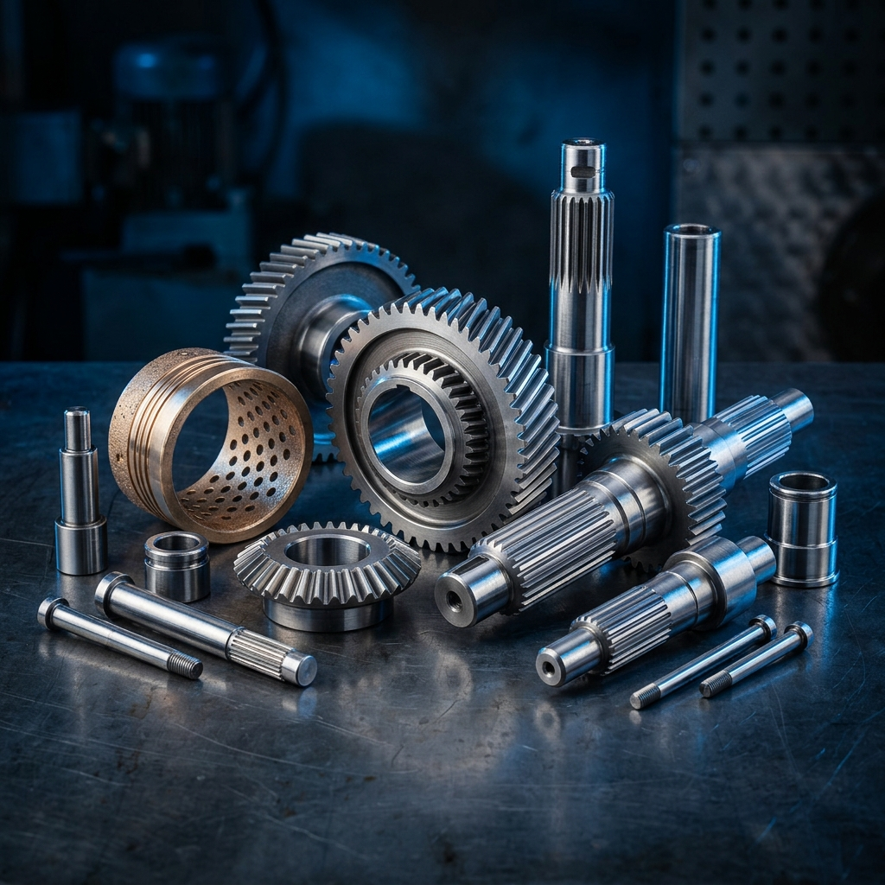

Especialistas em usinagem, tornearia, fresagem, solda especial e recuperação de componentes hidráulicos. Estrutura robusta para fabricar e reparar peças de todos os tamanhos com máxima agilidade.
Anos de Tradição
Área Fabril
Peças Produzidas
Clientes Satisfeitos
Estados Atendidos
Do componente milimétrico ao maquinário pesado: processos certificados com controle rigoroso de qualidade e materiais nobres.


Torneamento convencional e CNC de alta capacidade para modelagem impecável de aços especiais, ligas nobres e peças industriais.


Usinagem de geometrias complexas e engrenamentos de alto rendimento mecânico com tolerâncias centesimais.


Processos homologados de soldagem para união, preenchimento e reconstrução estrutural de componentes sob extrema fadiga.


Reforma integral de sistemas hidráulicos pesados para os setores agrícola, florestal, transporte e indústrias da região.
Fundada em 1993 na cidade de Vilhena/RO, a Tornearia Fresadora Universo nasceu com o propósito de suprir a demanda por peças e serviços metalmecânicos de alta qualidade na região.
Ao longo de mais de 30 anos de história, evoluímos lado a lado com a tecnologia, investindo em infraestrutura de 3.000m², processos CNC de alta performance, maquinários pesados e frota estruturada para fornecer soluções com agilidade em toda a região.
Fabricamos e recuperamos engrenagens de alta precisão, pinhões cônicos, eixos-árvore, camisas e hastes cromadas para cilindros hidráulicos, buchas de bronze e muito mais. Projetamos soluções robustas sob medida para indústrias, tratores, colheitadeiras e maquinários em geral.
Ver Catálogo
Do aço bruto à peça final acabada: detalhamento técnico dos componentes que fabricamos e recuperamos com rigor centesimal, ligas nobres e processos certificados.
Usinagem pesada e de precisão de eixos de transmissão de grande comprimento, pontas de eixo e mangas de eixo com ajustes centesimais (h6/h7) para rolamentos e acoplamentos.
Corte e abertura de roscas especiais com diferentes passos e perfis complexos para fusos industriais de elevação, prensas e transportadores helicoidais de carga.
Divisão e fresagem precisa de engrenamentos mecânicos com caracóis e fresas módulo para transmissões industriais, caixas redutoras e implementos pesados.
Recuperação completa de atuadores hidráulicos pesados e processos certificados de soldagem para peças sob severo estresse mecânico e térmico.
Dispomos de frota própria e caminhão equipado com guindauto Munck para coleta especializada, içamento de componentes pesados e devolução técnica direto na sua fazenda, canteiro ou indústria.

Caminhão equipado com guindauto para içamento, carga e descarga de componentes pesados (redutores, cilindros e eixos de até 4 metros) no seu próprio local de trabalho, com total segurança.
Sua equipe não precisa se preocupar com fretes de terceiros ou carretos inadequados. Nós retiramos a peça danificada no seu local e entregamos usinada, balanceada e pronta para montagem.
Nossa oficina e centro de usinagem são preparados para realizar fabricações e reparos de alta precisão com estrutura robusta. Venha nos visitar pessoalmente para conhecer de perto nossa infraestrutura e equipe técnica.
Av. Celso Mazutti, 2821 – Jardim América, Vilhena - RO
Segunda a Sexta: 07:30 às 11:30 e das 13:30 às 17:30
Atendimento local e suporte logístico interestadual
Fale com nossa equipe técnica, apresente suas medidas ou projeto e receba atendimento imediato com avaliação dimensional precisa.
Tire suas dúvidas rápidas sobre processos de fabricação, materiais e prazos.
Sim! Caso você não tenha o desenho técnico original, nossa equipe analisa a peça desgastada ou quebrada, faz o mapeamento tridimensional das medidas originais e projeta a nova peça respeitando todas as tolerâncias e materiais necessários.
Nossa oficina de 3.000m² conta com tornos e fresadoras de diferentes capacidades de barramento e mesa. Conseguimos usinar e soldar desde peças pequenas e milimétricas de precisão até eixos e cilindros hidráulicos de grande porte para maquinários industriais, florestais e agrícolas pesados.
Trabalhamos com uma ampla variedade de ligas metálicas, incluindo aços especiais de alta resistência (como SAE 1045, 4140, 8620), ferro fundido, aço inoxidável, alumínio, bronze, latão e cobre. Nossa estrutura de solda atende a quase todos os processos para essas ligas.
Na imensa maioria dos casos, sim. A recuperação (troca de vedações, retificação e cromagem da haste, soldagem de olhais) devolve ao cilindro a eficiência de uma peça nova por uma fração do preço de um cilindro original de fábrica.
Atendemos ambas as demandas. Fabricamos peças únicas sob demanda (reparos e protótipos urgentes) e também produzimos pequenas e médias séries/lotes de peças seriadas com a repetitividade e precisão do nosso maquinário CNC.
Sim, todos os nossos serviços de usinagem, fabricação e recuperação de cilindros hidráulicos passam por rígidos testes internos de controle de qualidade e contam com garantia de fabricação e montagem.
O prazo varia conforme a complexidade e o tamanho da peça. No entanto, entendemos que máquina parada gera prejuízos. Por isso, trabalhamos com agilidade e compromisso para entregar soluções no menor tempo possível sem comprometer a precisão.
Você pode trazer a sua peça ou desenho técnico diretamente em nossa oficina em Vilhena/RO, ou enviar as medidas e especificações pelo nosso WhatsApp (69) 3321-3929. Nossa equipe técnica retornará rapidamente.